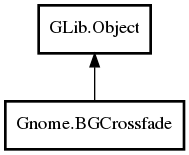

BGCrossfade
Object Hierarchy:

Description:
public class BGCrossfade : Object
Namespace: Gnome
Package: gnome-desktop-3.0
Content:
Properties:
- public
int height { construct set; get; }
- public
int width { construct set; get; }
Creation methods:
Methods:
Signals:
- public virtual signal void finished (
Object window)